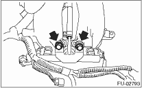
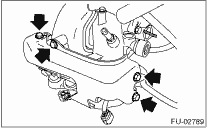

1. Release the fuel pressure. 
2. Disconnect the ground cable from the battery.

3. Open the fuel filler flap lid, and remove the fuel filler cap.
4. Remove the air intake duct and air cleaner case.
5. Remove the power steering pump and reservoir tank.
(1) Remove the front side V-belt.
(2) Remove the bolts which hold the power steering pipes onto the intake manifold protector RH.
NOTE:
Do not disconnect the power steering hose.
(3) Remove the bolts which install the power steering pump to the bracket.

(4) Disconnect the connector from power steering pressure switch (A).

(5) Remove the reservoir tank from the bracket by pulling it upward.

(6) Place the power steering pump and tank on the right side wheel apron.

6. Remove the fuel pipe protector RH.

7. Remove the harness band (A) which holds the engine harness to injector pipe.
8. Disconnect connector (B) from the fuel injector.
9. Remove the bolt which holds fuel injector pipe onto intake manifold.

10. Remove the fuel injector while lifting up the fuel injector pipe.
1. Release the fuel pressure.
2. Remove the battery.
3. Open the fuel filler flap lid, and remove the fuel filler cap.
4. Remove the fuel pipe protector LH.

5. Remove the harness band (A) which holds the engine harness to injector pipe.
6. Disconnect connector (B) from the fuel injector.

7. Remove the bolt which holds fuel injector pipe onto intake manifold.

8. Remove the fuel injector while lifting up the fuel injector pipe.